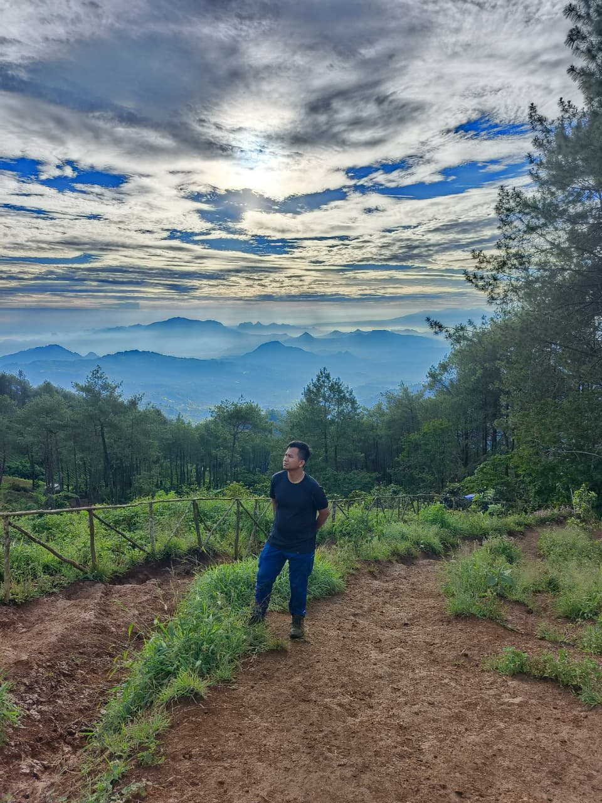

|

|
Assalamualaikum Warahmatullahi Wabarakatuh
Saya Terlahir sebagai Tuli. Saya memilih menggunakan istilah Tuli, bukan Tunarungu, karena saya memiliki identitas diri sebagai Tuli, memiliki hak sebagai Tuli, dan diciptakan oleh Allah dengan keadaan yang penuh makna.
Tuli bukanlah kata kasar.
Namun masih banyak orang awam yang belum memahami dan belum mendalami Budaya Tuli, sehingga sering salah paham terhadap istilah tersebut.
saya ingin memperkenalkan kepada masyarakat bahwa Budaya Tuli adalah bagian penting dari keberagaman, identitas, bahasa, dan kehidupan sosial yang perlu dihargai.
|